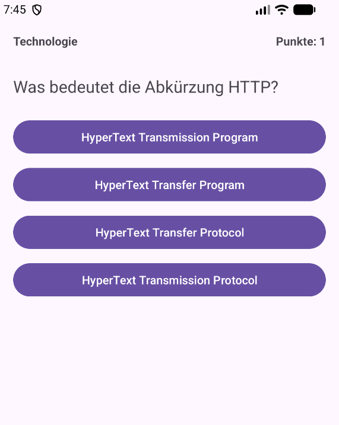

Modul 335 Mobile Applikationen, Tag 2 Vormittag. Zeitbudget 50 Minuten. Version 3 vom 14.08.2026.

0dp, match_parent und Anker auf Geschwisterelemente.Du gibst nichts ab. Das Blatt gehört dir. Prüf deine Arbeit an der Vergleichsliste im Lösungsmaterial. Am Prüfungstag hilft dir nur, was du selbst gebaut hast.
Fertig bist du, wenn das stimmt:
Mach von beidem einen Screenshot für dich selbst.
Dazu der 03AB Wissenscheck. Er deckt 03A und 03B zusammen ab.
Der Bildschirm macht heute noch nichts. Du tippst einen Button an und es passiert nichts. Das ist Absicht, genau wie beim Formular in 02B. Heute geht es nur um das Layout. Im nächsten Auftrag wertest du den Klick aus.
Das ist auch die schnellere Reihenfolge. Wer Layout und Verhalten gleichzeitig baut, weiss bei einem Fehler nie, welche der zwei Baustellen ihn erwischt hat.
Du baust den Bildschirm, auf dem das Quiz gespielt wird. Oben links steht die Kategorie, oben rechts der Punktestand. Darunter die Frage, darunter vier Antwort-Buttons untereinander.
Die Frage ist fest eingebaut, es gibt genau eine. Auch das ist Absicht, und du wirst selbst merken warum.
| Feld | Wert |
|---|---|
| Kategorie | Technologie |
| Fragetext | Was bedeutet die Abkürzung HTTP? |
| Antwort 1 | HyperText Transmission Program |
| Antwort 2 | HyperText Transfer Program |
| Antwort 3 | HyperText Transfer Protocol |
| Antwort 4 | HyperText Transmission Protocol |
Das sind alle Bausteine, die du für diesen Auftrag brauchst. Mehr nicht.
| Baustein | Wofür |
|---|---|
| ConstraintLayout | Das Root-Element. Children werden mit Constraints an Kanten geheftet |
| LinearLayout | Container, der seine Children stur untereinander stellt |
| TextView | Kategorie, Punktestand, Fragetext |
| Button | Die vier Antworten |
| strings.xml | Alle sichtbaren Texte |
Welche Angaben Pflicht sind:
| Angabe | Pflicht bei | Bemerkung |
|---|---|---|
| android:id | jedem Element, das du im Code brauchst oder das als Anker dient | Namenskonvention siehe unten |
| android:layout_width | jedem Element | immer |
| android:layout_height | jedem Element | immer |
| app:layout_constraint... | jedem direkten Child des ConstraintLayout | mindestens eine waagrechte und eine senkrechte |
| android:orientation | jedem LinearLayout | ohne Angabe nimmt Android waagrecht an |
| android:text | jedem sichtbaren Text | immer als @string/…, nie fest |
Die Regel aus 02B gilt weiter.
| Element | id |
|---|---|
| ConstraintLayout, Root | clMain |
| TextView Kategorie | tvCategory |
| TextView Punktestand | tvScore |
| TextView Fragetext | tvQuestion |
| LinearLayout mit den Antworten | llAnswers |
| Die vier Buttons | btnAnswer1 bis btnAnswer4 |
Bezeichner sind englisch, sichtbare Texte deutsch.
Denk kurz darüber nach, bevor du anfängst. Aufschreiben musst du nichts davon.
strings.xml, statt sie ins Layout zu tippen?Diese vier Fragen kommen im 03AB Wissenscheck wieder. Dort bekommst du zu jeder Antwort sofort eine Rückmeldung. Dasselbe gilt für das, was du in A4 und C1 beobachtest. Wer hier kurz nachdenkt und dort genau hinschaut, hat den Wissenscheck in fünf Minuten durch.
A1Das alte Layout leeren.
Öffne app/src/main/res/layout/activity_main.xml im Modus Code.
Lösche die zwei TextViews tvTitle und tvStage. Das Root-Element clMain bleibt mit allen seinen Angaben stehen.
Lösche in res/values/strings.xml den Eintrag stage_hint. Er wird ab jetzt von niemandem mehr gebraucht.
Warum du ihn löschst und nicht einfach stehen lässt. Eine Ressource, die niemand benutzt, meldet Lint als gelbe Warnung. Wichtiger ist der Grund dahinter: wer beim nächsten Lesen stage_hint findet, sucht nach der Stelle, die ihn anzeigt. Es gibt keine. Solche Sackgassen kosten Zeit.
A2Die Texte anlegen.
Trag in res/values/strings.xml die sechs Texte ein. Die Namen sind vorgegeben, damit dein Code später zum Lösungsmaterial passt.
<string name="category_label">Technologie</string> <string name="q1_text">Was bedeutet die Abkürzung HTTP?</string> <string name="q1_answer1">HyperText Transmission Program</string> <string name="q1_answer2">HyperText Transfer Program</string> <string name="q1_answer3">HyperText Transfer Protocol</string> <string name="q1_answer4">HyperText Transmission Protocol</string>
Das q1_ im Namen ist ein Versprechen an dich selbst. Es heisst: das hier gehört zu Frage 1, und es wird nicht die letzte Frage bleiben. Beim übernächsten Auftrag fliegen diese fünf Zeilen wieder raus. Sie sind die Krücke, an der du merkst, warum es eine Datenklasse braucht.
A3Kategorie und Punktestand. Diesen Block bekommst du vorgegeben.
<TextView android:id="@+id/tvCategory" android:layout_width="wrap_content" android:layout_height="wrap_content" android:text="@string/category_label" android:textSize="14sp" android:textStyle="bold" app:layout_constraintStart_toStartOf="parent" app:layout_constraintTop_toTopOf="parent" /> <TextView android:id="@+id/tvScore" android:layout_width="wrap_content" android:layout_height="wrap_content" android:textSize="14sp" android:textStyle="bold" app:layout_constraintBaseline_toBaselineOf="@id/tvCategory" app:layout_constraintEnd_toEndOf="parent" tools:text="Punkte 0" />
Zwei Dinge sind neu. Lies sie genau, sie kommen beide wieder.
Erstens, der Baseline-Anker. layout_constraintBaseline_toBaselineOf heftet nicht Kante an Kante, sondern Grundlinie an Grundlinie. Die Grundlinie ist die Linie, auf der die Buchstaben sitzen.
Warum das besser ist als Top_toTopOf: sobald die zwei Texte verschieden gross sind, sitzen sie mit einem Top-Anker sichtbar versetzt. Mit dem Baseline-Anker stehen sie immer auf einer Linie, wie in einer Zeile Text. Das ist der übliche Weg für alles, was nebeneinander in einer Zeile steht.
tvScore hat darum keinen Top-Anker. Die Baseline ist bereits die senkrechte Constraint.
Zweitens, tools:text statt android:text. Das ist kein Tippfehler. Schreib es genau so ab. Was der Unterschied ist, findest du in A4 selbst heraus.
A4Starten und genau hinschauen.
Wechsle oben rechts auf Split. Rechts siehst du die Vorschau. Merk dir, was dort oben rechts steht.
Starte jetzt die App auf dem Emulator. Schau dir dieselbe Stelle an.
Sag dir in einem Satz, was anders ist. Genau danach fragt der Wissenscheck.
So prüfst du Teil A.
strings.xml hat sechs Einträge plus app_name, und stage_hint ist weg.B1Der Fragetext.
Bau eine TextView mit der id tvQuestion. Die Vorgaben stehen in der Tabelle, die Constraints setzt du selbst.
| Angabe | Wert |
|---|---|
| android:layout_width | über die ganze Breite. Du bist direkt im ConstraintLayout, also die Schreibweise von dort |
| android:layout_height | wrap_content |
| android:layout_marginTop | 32dp |
| android:text | @string/q1_text |
| android:textSize | 20sp |
| Anker oben | an die Unterkante von tvCategory |
| Anker links und rechts | an den Parent |
Der Anker nach oben zeigt auf ein Geschwisterelement, nicht auf den Parent. Also @id/tvCategory, ohne Plus. Das Plus vergibt eine id neu, ohne Plus wird auf eine bestehende verwiesen. Das kennst du vom Trennstreifen in 02B.
B2Der Container für die Antworten.
Setz unter den Fragetext ein LinearLayout. Es hält die vier Buttons untereinander.
<LinearLayout android:id="@+id/llAnswers" android:layout_width="0dp" android:layout_height="wrap_content" android:layout_marginTop="24dp" android:orientation="vertical" app:layout_constraintEnd_toEndOf="parent" app:layout_constraintStart_toStartOf="parent" app:layout_constraintTop_toBottomOf="@id/tvQuestion"> <!-- hier kommen die vier Buttons hinein --> </LinearLayout>
Warum ein LinearLayout im ConstraintLayout steckt. Die vier Buttons sollen untereinander liegen und nachrücken, sobald einer höher wird. Genau dafür ist ein LinearLayout da.
Im ConstraintLayout bräuchte jeder Button einen Anker auf seinen Vorgänger. Das sind vier Ketten, die du bei jeder Änderung nachziehen musst. Schiebst du einen Button dazwischen, änderst du drei Anker.
Die Denkregel aus Layouts verstehen: hintereinander gleich LinearLayout, am Rand klebend gleich ConstraintLayout. Hier gilt beides, darum steckt das eine im anderen.
Beachte die zwei Breiten. Das llAnswers steht auf 0dp, weil es direktes Child des ConstraintLayout ist. Die Buttons darin bekommen gleich match_parent, weil sie im LinearLayout sitzen. Zwei Schreibweisen, dieselbe Absicht. Das ist genau die Stelle aus 02B, jetzt in einem echten Bildschirm.
Wenn du jetzt in Layouts verstehen nachschlägst. Dort steckt der Fragetext in einem FrameLayout, bei dir steht er direkt im ConstraintLayout. Das ist kein Widerspruch, sondern ein anderer Entscheid.
Ein FrameLayout stapelt seine Children übereinander. Man braucht es, wenn etwas über etwas anderem liegen soll. Im Bauplan dort liegt eine Rückmeldung über der Frage.
Deine App macht das anders. Sie zeigt die Rückmeldung, indem sie die Antwort-Buttons einfärbt, grün und rot. Da liegt nichts übereinander, also braucht es kein FrameLayout. Die Frage lautet immer: liegt hier wirklich etwas übereinander? Wenn nein, dann kein FrameLayout.
Abschnitt 8 des Nachschlagewerks zählt alle Unterschiede auf.
B3Der erste Button. Diesen bekommst du vorgegeben.
<Button android:id="@+id/btnAnswer1" android:layout_width="match_parent" android:layout_height="wrap_content" android:layout_marginBottom="10dp" android:text="@string/q1_answer1" />
Er kommt in das llAnswers hinein, nicht daneben.
B4Die drei weiteren Buttons. Ab hier selbst.
| id | android:text | Abstand nach unten |
|---|---|---|
| btnAnswer2 | @string/q1_answer2 | 10dp |
| btnAnswer3 | @string/q1_answer3 | 10dp |
| btnAnswer4 | @string/q1_answer4 | keiner |
Bau sie nach dem Muster von B3.
Warum der letzte Button keinen Abstand nach unten hat. Der Abstand steht zwischen den Buttons, nicht um sie herum. Der letzte hat keinen Nachbarn mehr darunter. Gäbst du ihm einen, hättest du unter der Liste eine Lücke, die niemand bestellt hat, und beim Zählen der Abstände geht die Rechnung nicht auf.
So prüfst du Teil B.
@string/….C1Ins Querformat drehen. Schau genau hin.
Dreh den Emulator mit Strg und F11, oder über den Knopf in der Leiste rechts daneben.
Schau dir die vier Buttons an. Vergleiche ihre Höhen miteinander. Sag dir in einem Satz, was du siehst und woran es liegt.
Auch danach fragt der Wissenscheck. Repariert wird heute nichts, das ist die Zusatzaufgabe.
C2Die Log-Zeile und den Kommentar nachziehen.
Öffne MainActivity.java. Am Java-Code hast du heute nichts geändert, zwei Texte stimmen aber nicht mehr.
das Projekt steht. Mach daraus etwas, das zum Spielbildschirm passt.Warum das kein Kleinkram ist. Ein Kommentar, der etwas anderes behauptet als der Code, ist schlimmer als gar kein Kommentar. Der nächste Leser glaubt ihm und sucht dann am falschen Ort. Dasselbe gilt für eine Log-Zeile: sie ist eine Notiz an dich selbst, und eine falsche Notiz führt dich in die Irre, wenn es eilt.
So prüfst du Teil C.
tag:Modul335 deine neue Meldung.MainActivity beschreibt den Spielbildschirm.Ohne Vorlage. Die Lösungen findest du im Material 03B Lösung - Der Spielbildschirm. Schau erst hinein, wenn du es selbst versucht hast.
Sorg dafür, dass oben rechts auch im Emulator etwas steht, ohne den Text im Java-Code zu setzen. Ändere dazu genau eine Zeile im Layout.
So prüfst du: Im Emulator steht oben rechts derselbe Text wie in der Vorschau.
Danach zurückbauen. Im nächsten Auftrag setzt der Code diesen Text, und dann darf im Layout keiner mehr stehen.
Häng einen fünften Antwort-Button an, mit einem Text deiner Wahl. Er soll wie die anderen aussehen und sich einreihen.
So prüfst du: Fünf Buttons untereinander, gleich breit, gleiche Abstände. Der Abstand unter dem vierten stimmt jetzt auch.
Erkläre einem Lerngspänli in eigenen Worten, warum die vier Buttons in einem LinearLayout stecken und nicht direkt im ConstraintLayout. Zeig dabei auf dein eigenes XML.
So prüfst du: Dein Gegenüber kann danach selbst sagen, was es ändern müsste, um einen Button zwischen Nummer 2 und 3 einzuschieben.
Zuerst die Pflichtaufgabe fertig und lauffähig. Dann erst hier weiter.
Auftrag: Sorg dafür, dass alle vier Buttons gleich hoch bleiben, auch im Querformat und auch dann, wenn ein Text umbricht. Das Layout soll nicht mehr springen.
Und die Frage, die dazugehört: Beschreibe zuerst, warum es überhaupt springt. Erst danach baust du. Und sag hinterher, was deine Lösung kostet: was passiert mit einem Text, der noch länger wäre?
Keine Musterlösung. Es gibt mehrere richtige Wege. KI darfst du benutzen, aber du musst deine Lösung erklären können.
| Das siehst du | Ursache | Das machst du |
|---|---|---|
| Alles liegt oben links übereinander | Einem direkten Child des ConstraintLayout fehlt eine Constraint | Jedes direkte Child braucht mindestens eine waagrechte und eine senkrechte Constraint |
Rot: cannot resolve symbol '@id/tvCategory' | Der Verweis steht vor der Stelle, an der die id vergeben wird, oder anders geschrieben | Schreibweise vergleichen. Beim Vergeben @+id/, beim Verweisen @id/ |
| Die Buttons stehen nebeneinander statt untereinander | Am LinearLayout fehlt android:orientation | Auf vertical setzen. Ohne Angabe nimmt Android waagrecht an |
| Die Buttons sind so breit wie ihr Text | Sie stehen auf wrap_content | Auf match_parent ändern. Du bist im LinearLayout, nicht im ConstraintLayout |
| Der Fragetext ist nur so breit wie sein Text | tvQuestion steht auf wrap_content | Auf 0dp ändern und beide waagrechten Anker setzen |
| Kategorie und Punktestand stehen versetzt | Der zweite hängt an Top_toTopOf statt an der Baseline | Auf layout_constraintBaseline_toBaselineOf ändern und den Top-Anker entfernen |
Rot: Cannot resolve symbol 'tools' | Im Root-Element fehlt xmlns:tools | Die Zeile steht seit 03A im Layout. Sie darf beim Aufräumen nicht mitgelöscht werden |
Gelb bei stage_hint in strings.xml | Der Eintrag wird nirgends mehr benutzt | Löschen. Siehe A1 |
| Der Text quillt am Bildschirmrand hinaus | Am Root-Element fehlt der Rand aus 03A | Der Insets-Block in MainActivity setzt ihn. Er darf nicht gelöscht werden |
Beim Start: Unable to start activity mit InflateException | Das XML ist kaputt, meist ein fehlender schliessender Tag | Stacktrace lesen, drei Schritte aus 01B. Die Zeilennummer steht in der Meldung |
Das Wichtigste aus diesem Auftrag, zum Nachschlagen.
| HANOK | Ziel |
|---|---|
| 1.1 | Ergonomische Standards und Prinzipien der Interaktion kennen und anwenden |
| 1.2 | Design- und Benutzerführungs-Guidelines der Plattform anwenden |
| 3.2 | Framework und APIs der Plattform einsetzen |
Nach diesem Auftrag kannst du:
strings.xml ab, nicht ins Layout.| Zeitbudget | 50 Minuten. Teil A 12, Teil B 22, Teil C 8, Übungen 8 |
| Sozialform | Einzelarbeit. Bei den Denkfragen und Übung 3 zu zweit |
| Aufgabenart | Geführter Aufbau mit zwei Entdeckungsstellen (A4 Vorschau gegen Emulator, C1 Querformat) |
| Voraussetzung | 03A, dazu 02A und 02B vom Tag 1 |
| KI | In Teil A bis C nicht erlaubt. Bei den Übungen und der Zusatzaufgabe erlaubt |
| Abgabe | keine. Der Wissenscheck des Halbtags genügt |
| Name | Typ | Einstellung |
|---|---|---|
| 03B Auftrag - Der Spielbildschirm | Material | Schüler können Datei ansehen. Das ist dieses Dokument |
| 03AB Wissenscheck - Projektgerüst und Spielbildschirm | Aufgabe mit Quiz | Unbenotet, beliebig oft wiederholbar, kein Fälligkeitsdatum. Acht Fragen. Deckt 03A und 03B ab, wird nach 03B ausgefüllt |
| 03B Lösung - Der Spielbildschirm | Material | Schüler können Datei ansehen. Enthält den vollständigen Code als Text und die Vergleichsliste |
| Art | Was |
|---|---|
| Hardware | Eigenes Notebook, laufender Emulator Medium Phone API 36.1 |
| Software und Tools | Android Studio Quail 2, Patch 1 |
| Dokumente | Layouts verstehen, Constraints verstehen. Beide im Thema Nachschlagen |
| Buch | Android-Apps entwickeln für Einsteiger, Kapitel 4.4 Buttons |
Modul 335 | Tag 2 Vormittag | Auftrag 03B | Version 3 | 14.08.2026